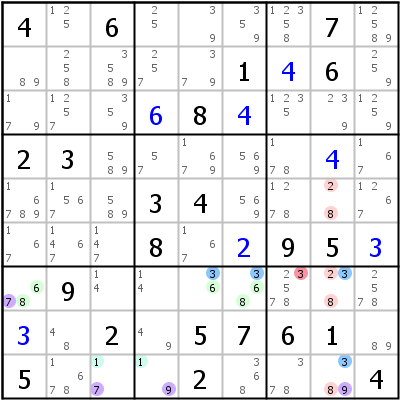

HoDoKu Solving Technique Index: Example for "ALS-XY-Wing"

Original sudoku:
4.6....7......1.6.....8....23..........34.......8..95..9.........2.5761.5...2...4
Use the following line if you want to load the sudoku in HoDoKu:
:9002:3:4.6....7......1+46....+68+4...23.....+4....34.......8.+295+3.9.......+3.2.5761.5...2...4:812 914 721 722 723 924 829 133 733 143 743 144 944 849 852 153 753 859 171 773 873 175 893 996:377:
The following representation can be pasted in most Sudoku programs:
.-------------------.----------------.-------------------. | 4 125 6 | 25 39 359 | 12358 7 12589 | | 89 258 3589 | 257 379 1 | 4 6 259 | | 179 1257 359 | 6 8 4 | 1235 239 1259 | :-------------------+----------------+-------------------: | 2 3 589 | 57 1679 569 | 178 4 167 | | 16789 1567 589 | 3 4 569 | 1278 28 1267 | | 167 1467 147 | 8 167 2 | 9 5 3 | :-------------------+----------------+-------------------: | 678 9 14 | 14 36 368 | 23578 238 2578 | | 3 48 2 | 49 5 7 | 6 1 89 | | 5 1678 17 | 19 2 368 | 378 389 4 | '-------------------'----------------'-------------------'
Representation of the step:
.---------------------.-------------------.---------------------.
| 4 125 6 | 25 39 359 | 12358 7 12589 |
| 89 258 3589 | 257 379 1 | 4 6 259 |
| 179 1257 359 | 6 8 4 | 1235 239 1259 |
:---------------------+-------------------+---------------------:
| 2 3 589 | 57 1679 569 | 178 4 167 |
| 16789 1567 589 | 3 4 569 | 1278 B28 1267 |
| 167 1467 147 | 8 167 2 | 9 5 3 |
:---------------------+-------------------+---------------------:
| A678 9 14 | 14 A36 A368 | 2-3578 B238 2578 |
| 3 48 2 | 49 5 7 | 6 1 89 |
| 5 1678 C17 | C19 2 368 | 378 B389 4 |
'---------------------'-------------------'---------------------'
Almost Locked Set XY-Wing: A=r7c156 {3678}, B=r579c8 {2389}, C=r9c34 {179}, X,Y=7,9, Z=3 => r7c7<>3
Copyright © 2008-12 by Bernhard Hobiger
Last modified on May 5, 2025 by shorty#3746
(based of the 1to9only Github repo)
All material on this page is licensed under the GNU FDLv1.3.